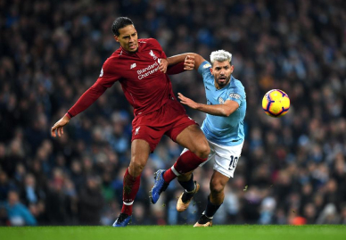

Góc chuyên gia
Nhận định bóng đá Ngoại Hạng Anh - Dự đoán tỷ số Ngoại Hạng Anh

Dự đoán Liverpool vs Man City (23h30 10/11) bởi Craig Bellamy
Dự đoán MU vs Brighton (21h 10/11) bởi Paul Scholes
Tỷ lệ bóng đá Ngoại hạng Anh hôm nay 10/11: MU vs Brighton
Nhận định bóng đá Liverpool vs Man City, 23h30 ngày 10/11: Không chỉ là vị trí nhì bảng
Nhận định bóng đá Wolves vs Aston Villa, 21h ngày 10/11: Tiếp tục chia điểm
Nhận định bóng đá Man Utd vs Brighton, 21h ngày 10/11: Đến lúc phải thắng trên sân nhà
MU vs Brighton (21h 10/11): Test ‘công thức chiến thắng’ ở Ngoại hạng Anh

Kết quả đối đầu Crystal Palace vs Arsenal: Pháo thủ chiếm tiên cơ
Bóng tròn - 09/01 11:15
Thông tin về kết quả đối đầu giữa Crystal Palace và Arsenal trước thềm vòng 22 Ngoại hạng Anh

Nhận định Leicester vs Southampton, 22h00 ngày 11/1: Bầy cáo quá tải
Quang Việt - 08/01 22:32
Phong độ đang ổn định nhưng lịch thi đấu dày đặc hiện nay là rào cản đáng kể dành cho Leicester City.

Nhận định MU vs Norwich, 22h00 ngày 11/1: Đáng sợ kẻ đường cùng
Thanh Sang - 08/01 21:54
Xếp cuối bảng nhưng Norwich nhận được đánh giá tích cực từ giới chuyên môn trước chuyến hành quân đến Old Trafford hôm nay.
Kết quả đối đầu Crystal Palace vs Arsenal: Pháo thủ chiếm tiên cơ
Bóng tròn - 09/01 11:15
Thông tin về kết quả đối đầu giữa Crystal Palace và Arsenal trước thềm vòng 22 Ngoại hạng Anh